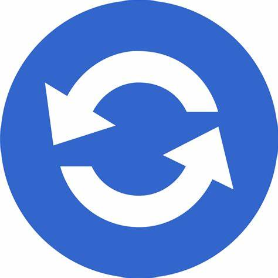

<!-- * * * * * * * * * * * * * * * * * * * * * * * * * * * * * * * -->
<!-- * * * * * * * * * * * The content below * * * * * * * * * * * -->
<!-- * * * * * * * * * * is only a placeholder * * * * * * * * * * -->
<!-- * * * * * * * * * * and can be replaced.  * * * * * * * * * * -->
<!-- * * * * * * * * * * * * * * * * * * * * * * * * * * * * * * * -->
<!-- * * * * * * * * * Delete the template below * * * * * * * * * -->
<!-- * * * * * * * to get started with your project! * * * * * * * -->
<!-- * * * * * * * * * * * * * * * * * * * * * * * * * * * * * * * -->

<style>
    :host {
      --bright-blue: oklch(51.01% 0.274 263.83);
      --electric-violet: oklch(53.18% 0.28 296.97);
      --french-violet: oklch(47.66% 0.246 305.88);
      --vivid-pink: oklch(69.02% 0.277 332.77);
      --hot-red: oklch(61.42% 0.238 15.34);
      --orange-red: oklch(63.32% 0.24 31.68);
  
      --gray-900: oklch(19.37% 0.006 300.98);
      --gray-700: oklch(36.98% 0.014 302.71);
      --gray-400: oklch(70.9% 0.015 304.04);
  
      --red-to-pink-to-purple-vertical-gradient: linear-gradient(180deg,
          var(--orange-red) 0%,
          var(--vivid-pink) 50%,
          var(--electric-violet) 100%);
  
      --red-to-pink-to-purple-horizontal-gradient: linear-gradient(90deg,
          var(--orange-red) 0%,
          var(--vivid-pink) 50%,
          var(--electric-violet) 100%);
  
      --pill-accent: var(--bright-blue);
  
      font-family: "Inter", -apple-system, BlinkMacSystemFont, "Segoe UI", Roboto,
        Helvetica, Arial, sans-serif, "Apple Color Emoji", "Segoe UI Emoji",
        "Segoe UI Symbol";
      box-sizing: border-box;
      -webkit-font-smoothing: antialiased;
      -moz-osx-font-smoothing: grayscale;
    }
  
    h1 {
      font-size: 3.125rem;
      color: var(--gray-900);
      font-weight: 500;
      line-height: 100%;
      letter-spacing: -0.125rem;
      margin: 0;
      font-family: "Inter Tight", -apple-system, BlinkMacSystemFont, "Segoe UI", Roboto,
        Helvetica, Arial, sans-serif, "Apple Color Emoji", "Segoe UI Emoji",
        "Segoe UI Symbol";
    }
  
    p {
      margin: 0;
      color: var(--gray-700);
    }
  
    main {
      width: 100%;
      min-height: 100%;
      display: flex;
      justify-content: center;
      align-items: center;
      padding: 1rem;
      box-sizing: inherit;
      position: relative;
    }
  
    .angular-logo {
      max-width: 9.2rem;
    }
  
    .content {
      display: flex;
      justify-content: space-around;
      width: 100%;
      max-width: 700px;
      margin-bottom: 3rem;
    }
  
    .content h1 {
      margin-top: 1.75rem;
    }
  
    .content p {
      margin-top: 1.5rem;
    }
  
    .divider {
      width: 1px;
      background: var(--red-to-pink-to-purple-vertical-gradient);
      margin-inline: 0.5rem;
    }
  
    .pill-group {
      display: flex;
      flex-direction: column;
      align-items: start;
      flex-wrap: wrap;
      gap: 1.25rem;
    }
  
    .pill {
      display: flex;
      align-items: center;
      --pill-accent: var(--bright-blue);
      background: color-mix(in srgb, var(--pill-accent) 5%, transparent);
      color: var(--pill-accent);
      padding-inline: 0.75rem;
      padding-block: 0.375rem;
      border-radius: 2.75rem;
      border: 0;
      transition: background 0.3s ease;
      font-family: var(--inter-font);
      font-size: 0.875rem;
      font-style: normal;
      font-weight: 500;
      line-height: 1.4rem;
      letter-spacing: -0.00875rem;
      text-decoration: none;
    }
  
    .pill:hover {
      background: color-mix(in srgb, var(--pill-accent) 15%, transparent);
    }
  
    .pill-group .pill:nth-child(6n + 1) {
      --pill-accent: var(--bright-blue);
    }
  
    .pill-group .pill:nth-child(6n + 2) {
      --pill-accent: var(--french-violet);
    }
  
    .pill-group .pill:nth-child(6n + 3),
    .pill-group .pill:nth-child(6n + 4),
    .pill-group .pill:nth-child(6n + 5) {
      --pill-accent: var(--hot-red);
    }
  
    .pill-group svg {
      margin-inline-start: 0.25rem;
    }
  
    .social-links {
      display: flex;
      align-items: center;
      gap: 0.73rem;
      margin-top: 1.5rem;
    }
  
    .social-links path {
      transition: fill 0.3s ease;
      fill: var(--gray-400);
    }
  
    .social-links a:hover svg path {
      fill: var(--gray-900);
    }
  
    @media screen and (max-width: 650px) {
      .content {
        flex-direction: column;
        width: max-content;
      }
  
      .divider {
        height: 1px;
        width: 100%;
        background: var(--red-to-pink-to-purple-horizontal-gradient);
        margin-block: 1.5rem;
      }
    }
  </style>
  <mat-toolbar style="background-color: gray; color:black;">
    <button mat-icon-button class="example-icon" aria-label="Example icon-button with menu icon">
      <mat-icon></mat-icon>
    </button>
    <span>Mi primer trabajo de la unidad 2</span>
    <span class="example-spacer"></span>
    <button mat-icon-button class="example-icon favorite-icon" aria-label="Example icon-button with heart icon">
      <mat-icon></mat-icon>
    </button>
    <button mat-icon-button class="example-icon" aria-label="Example icon-button with share icon">
      <mat-icon></mat-icon>
    </button>
  </mat-toolbar>
  <main class="main">
    <div class="content">
      <div class="left-side">
        <svg xmlns="http://www.w3.org/2000/svg" viewBox="0 0 982 239" fill="none" class="angular-logo">
          
          <defs>
            <radialGradient id="c" cx="0" cy="0" r="1" gradientTransform="rotate(118.122 171.182 60.81) scale(205.794)"
              gradientUnits="userSpaceOnUse">
              <stop stop-color="#FF41F8" />
              <stop offset=".707" stop-color="#FF41F8" stop-opacity=".5" />
              <stop offset="1" stop-color="#FF41F8" stop-opacity="0" />
            </radialGradient>
            <linearGradient id="b" x1="0" x2="982" y1="192" y2="192" gradientUnits="userSpaceOnUse">
              <stop stop-color="#F0060B" />
              <stop offset="0" stop-color="#F0070C" />
              <stop offset=".526" stop-color="#CC26D5" />
              <stop offset="1" stop-color="#7702FF" />
            </linearGradient>
            <clipPath id="a">
              <path fill="#fff" d="M0 0h982v239H0z" />
            </clipPath>
          </defs>
        </svg>
        <h1>Hola, AlumnITO</h1>
        <p>Congratulations! Your app is running. 🎉</p>
        <form class="example-form">
          <mat-form-field class="example-full-width">
            <mat-label>Usuario</mat-label>
            <input matInput #message maxlength="256" placeholder="Ejemplo Roronoa...">
            <mat-hint align="start"><strong>No compartas tu usuario</strong> </mat-hint>
            <mat-hint align="end">{{message.value.length}} / 256</mat-hint>
          </mat-form-field>
        </form>
        <form class="example-form">
          <mat-form-field class="example-full-width">
            <mat-label>Contraseña</mat-label>
            <input matInput #message maxlength="256" placeholder="Ejemplo ****..." type="password">
            <mat-hint align="start"><strong>No compartas tu contraseña</strong> </mat-hint>
            <mat-hint align="end">{{message.value.length}} / 256</mat-hint>
          </mat-form-field>
        </form>
        <section>
          <div class="example-button-row">
            <button mat-flat-button (click)="iniciarSesion()">Iniciar sesion</button>
          </div>
        </section>
        <mat-form-field class="example-full-width">
          <mat-label>Deja un comentario</mat-label>
          <textarea matInput placeholder="No se cuales componentes poner..."></textarea>
        </mat-form-field>
        <mat-tab-group style="background-color: rgb(81, 47, 92);">
          <mat-tab label="Primero" style="color: rgb(255, 255, 255);"> Contenido 1 </mat-tab>
          <mat-tab label="Segundo" style="color: rgb(255, 255, 255);"> Contenido 2 </mat-tab>
          <mat-tab label="Terceri" style="color: rgb(255, 255, 255);"> Contenido 3 </mat-tab>
        </mat-tab-group>
        <mat-card>
          <mat-card-content>
            <h2 class="example-h2" style="color: aliceblue;">Slide toggle configuration</h2>
  
            <section class="example-section">
              <mat-checkbox class="example-margin" [(ngModel)]="checked">Checked</mat-checkbox>
            </section>
  
            <section class="example-section">
              <mat-checkbox class="example-margin" [(ngModel)]="disabled">Disabled</mat-checkbox>
            </section>
          </mat-card-content>
        </mat-card>
  
        <mat-card class="result">
          <mat-card-content>
            <h2 class="example-h2" style="color: aliceblue;">Result</h2>
  
            <section class="example-section">
              <mat-slide-toggle class="example-margin" [checked]="checked" [disabled]="disabled">
                Slide me!
              </mat-slide-toggle>
            </section>
          </mat-card-content>
        </mat-card>
        <mat-form-field>
          <mat-label>Toppings</mat-label>
          <mat-select [formControl]="toppings" multiple>
            <mat-select-trigger>
              {{toppings.value?.[0] || ''}}
              @if ((toppings.value?.length || 0) > 1) {
              <span class="example-additional-selection">
                (+{{(toppings.value?.length || 0) - 1}} {{toppings.value?.length === 2 ? 'other' : 'others'}})
              </span>
              }
            </mat-select-trigger>
            @for (topping of toppingList; track topping) {
            <mat-option [value]="topping">{{topping}}</mat-option>
            }
          </mat-select>
        </mat-form-field>
        <mat-checkbox [(ngModel)]="centered" class="example-ripple-checkbox">Centered</mat-checkbox>
        <mat-checkbox [(ngModel)]="disabled" class="example-ripple-checkbox">Disabled</mat-checkbox>
        <mat-checkbox [(ngModel)]="unbounded" class="example-ripple-checkbox">Unbounded</mat-checkbox>
  
  
  
        <div class="example-ripple-container mat-elevation-z4" matRipple [matRippleCentered]="centered"
          [matRippleDisabled]="disabled" [matRippleUnbounded]="unbounded">
          Click me
        </div>
  
        <mat-form-field>
          <mat-label>Snack bar duration (seconds)</mat-label>
          <input type="number" [(ngModel)]="durationInSeconds" matInput>
        </mat-form-field>
  
        <button mat-stroked-button (click)="openSnackBar()" aria-label="Show an example snack-bar">
          Pizza party
        </button>
        <mat-slider min="0" max="100000" step="1000" showTickMarks discrete [displayWith]="formatLabel">
          <input matSliderThumb>
        </mat-slider>
        <mat-card class="example-card">
          <mat-card-content>
            <h2 class="example-h2" style="color: aliceblue;">Progress spinner configuration</h2>
        
            <section class="example-section">
              <label class="example-margin" style="color: aliceblue;">Mode:</label>
              <mat-radio-group [(ngModel)]="mode">
                <mat-radio-button class="example-margin" value="determinate">
                  Determinate
                </mat-radio-button>
                <mat-radio-button class="example-margin" value="indeterminate">
                  Indeterminate
                </mat-radio-button>
              </mat-radio-group>
            </section>
        
            @if (mode === 'determinate') {
              <section class="example-section">
                <label class="example-margin" style="color: aliceblue;">Progress:</label>
                <mat-slider class="example-margin">
                  <input type="range" [(ngModel)]="value" matSliderThumb>
                </mat-slider>
              </section>
            }
          </mat-card-content>
        </mat-card>
        
        <mat-card class="example-card">
          <mat-card-content>
            <h2 class="example-h2" style="color: aliceblue;">Result</h2>
        
            <mat-progress-spinner
                class="example-margin"
                [mode]="mode"
                [value]="value">
            </mat-progress-spinner>
          </mat-card-content>
        </mat-card>
        
      </div>
    </div>
  </main>
  
  <!-- * * * * * * * * * * * * * * * * * * * * * * * * * * * * * * * * -->
  <!-- * * * * * * * * * * * The content above * * * * * * * * * * * * -->
  <!-- * * * * * * * * * * is only a placeholder * * * * * * * * * * * -->
  <!-- * * * * * * * * * * and can be replaced.  * * * * * * * * * * * -->
  <!-- * * * * * * * * * * * * * * * * * * * * * * * * * * * * * * * * -->
  <!-- * * * * * * * * * * End of Placeholder  * * * * * * * * * * * * -->
  <!-- * * * * * * * * * * * * * * * * * * * * * * * * * * * * * * * * -->
  
  
  <router-outlet />